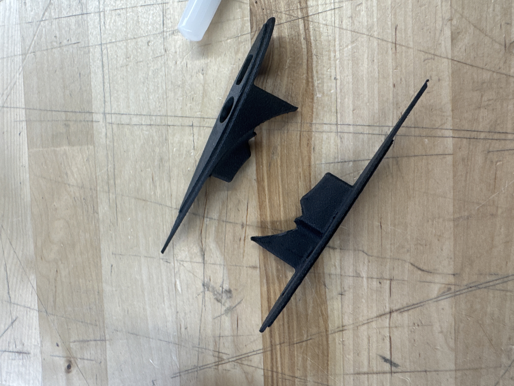
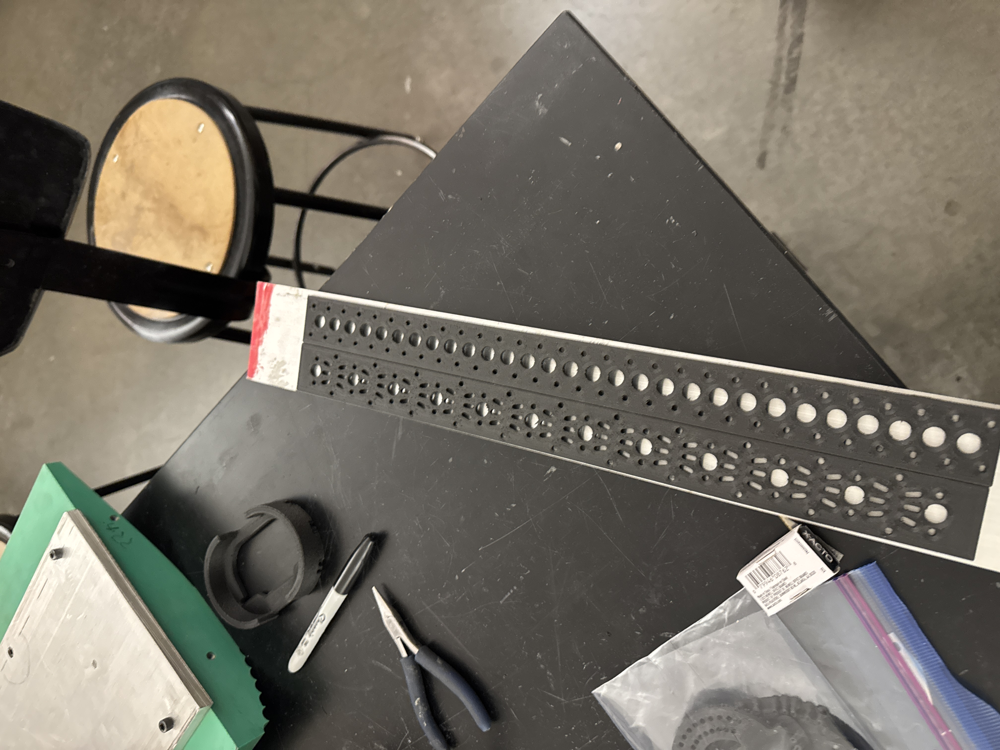
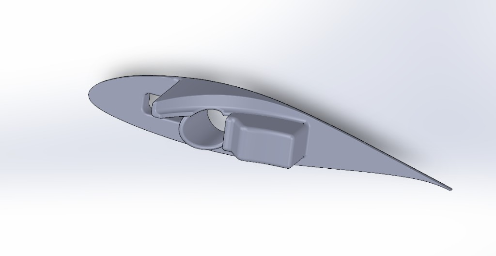
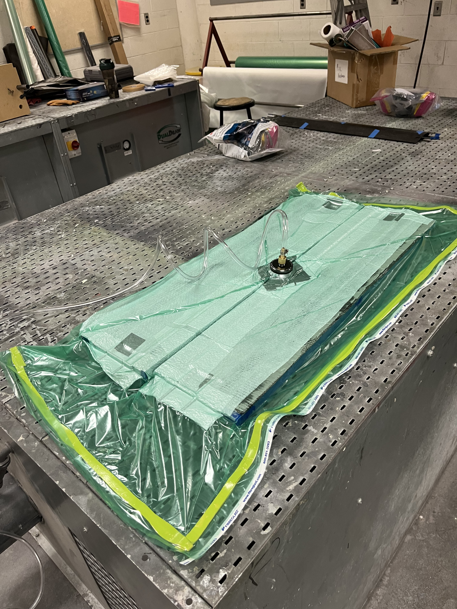
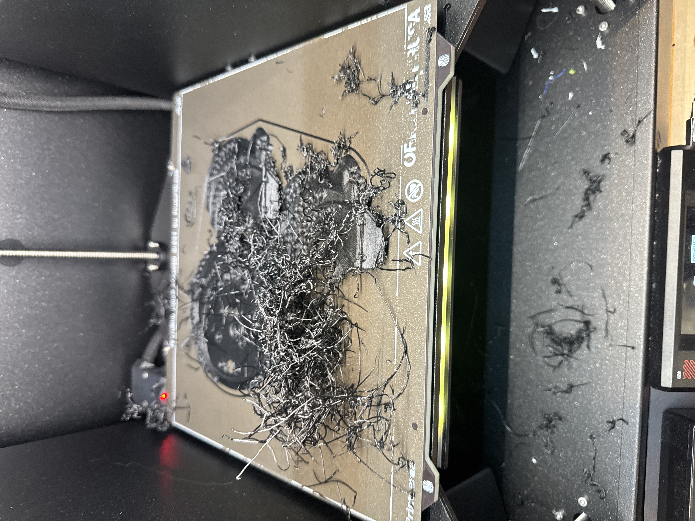
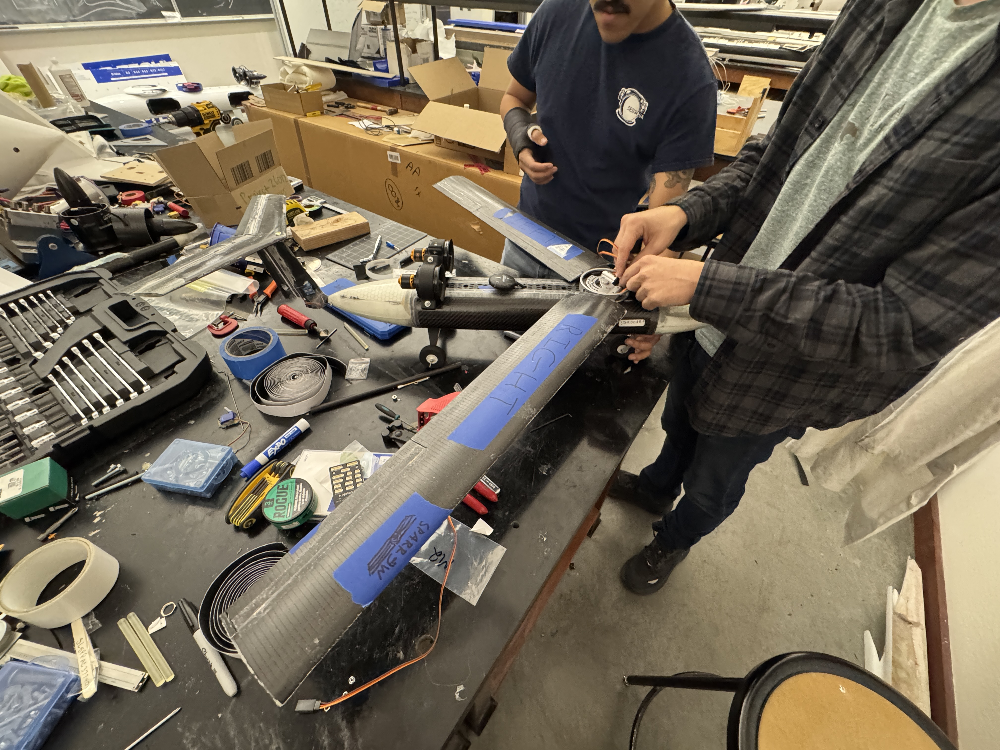

About
I am a mechanical engineering student at the University of Arizona with a focus on structural and fixture design, composites, and analysis-driven design and manufacturing. My senior capstone is a university-led, AFOSR-funded research UAV program where I own the wing structural design and material selection end-to-end, from a custom Python FEA tool to composites layups to SolidWorks CAD and iterative 3D-printed hardware and fixturing. Prior to my capstone, I spent over a year as a Quality Engineering Intern at ASSA ABLOY, where I pivoted into design work, building a Python/Flask control system, designing a production-ready mounting bracket in SolidWorks, and delivering a multi-door automated test rig. I care about doing the analysis correctly before selecting and consuming material, making things that actually work, and leaving behind documentation that someone else can pick up and run with.
Dynamically Scaled Flight and Wind Tunnel Model of a Modular UAV for Scientific Flight Experiments
A research UAV program funded by the Air Force Office of Scientific Research (AFOSR), designed to dynamically scale an existing high cost, highly modular UAV for use in proving fidelity of flight for base model UAV use in flight research. My formal title is Materials Lead, but in practice I took on nearly the full structural design of the UAV, writing the analysis code, selecting materials, manufacturing the wing, and delivering a flight-ready structure.

Fully assembled UAV body for integrated status review, with base UAV in background for reference. Nearly fully manufactured, with certain parts/systems still in need of work. Complete UAV exterior visible.
Wing Structure & Materials
The wing was designed to carry a 5G design load for a 2.87 kg UAV at a target wing mass of 80 g over a 1.38 m full wingspan (0.107 m chord). The construction is a foam sandwich with selective reinforcement, with all unnecessary weight eliminated.
- Core: ROHACELL 31 IG-F closed-cell PMI foam: extremely low density, good compressive strength, rigid, and compatible with epoxy systems.
- Inner/Outer Skin reinforcement: Hexcel +/-45° Biaxial FCIM255 carbon fiber fabric bonded to the foam faces. Provides bending stiffness and torsional resistance. Bonded over the foam in a sandwich structure, creates a rigid panel.
- Spars: UD pultruded carbon fiber rods running the full span, embedded in the skin. The geometry was sized analytically to meet bending stiffness and failure margins to two skin spars per half of the wing (upper/lower) with a cross-section of 3x3 mm each.
- Ribs and Other Structures/Fixtures: 3D-printed Nylon PA-612 CF15: selected for its strength-to-weight ratio. Designed for printability (wall thickness, bridging, support-free geometry) with tight dimensional tolerances for the spar rod seats and skin bond interfaces. Iterative print setting tuning was performed until they consistently yielded ideal parts.




Structural Analysis: Custom Python FEA Code
Wrote a dedicated structural FEA tool (Wing.py) prior to CAD development and used
it to optimize wing geometry, select materials, and validate load margins for the highest strength at the lowest weight possible. This was
an engineering-grade analytical framework that was validated and used to make wing design decisions. Those decisions were confirmed by a physical wing loading test: the wing held an equivalent 5G load without failure.
Classical Laminate Theory (CLT)
Full ABD matrix formulation for composite skin and web panels (web panels unused in final design). Computes membrane stiffness, bending stiffness, and coupling terms for each laminate in the cross-section.
Bredt-Batho Multi-Cell Torsion
Shear flow distribution across closed-shell wing, with stiffness-weighted shear partition to correctly allocate torsional load between the spar webs and skin panels.
Tsai-Wu Failure Criterion
Composite failure check applied to every lamina in every panel, computing factors of safety against first-ply failure under the 5G (14.356 kg overall, 7.178 kg per wing) design load case.
Sandwich Wrinkling & Web Buckling
Face-sheet wrinkling (Hoff-Mautner) and shear web buckling checks (shear webs unused in final design) include failure modes that classical beam theory misses entirely for a sandwich construction.
Parametric Sweep and Geometric/Material Property Study
Automated varying sweep over parameterized width, height, number of plies, material properties, and more to generate mass-vs-margin trade curves, driving the basis for the final geometry and material selection decisions.
Full Documentation
The tool shipped with a README, User Manual, Technical Reference, Validation, and Validation Results for use by any engineer who might employ this code for design decisions.
Composites Manufacturing
Performed the composites manufacturing by hand with two other team members. Hand-layup of carbon fiber fabric over the foam cores, insetting the spars into the foam, epoxy wet-out, vacuum bagging, and cure, followed by bonding and post-processing were entirely performed by us three students. This required process planning for a one-shot assembly where rework is not an option due to timeline constraints.



3D Printing: Design for Manufacture in Nylon CF
The ribs, fixtures, and select hardware were 3D printed in Nylon PA-612 CF15 on a Prusa Core One. Getting Nylon CF to print reliably with tight tolerances and optimal strength required iteration over varying combinations of temperatures, print speeds, wall counts, support geometry, flow rates, part geometries, and more. Not all prints succeeded, but the failures informed the final process parameters and design rules, allowing perfect settings to be reached through an iterative design process.



Integration & Assembly


ASSA ABLOY: Quality Engineering Intern
ASSA ABLOY is one of the world's largest access solutions companies. I joined as a QE intern supporting electro-mechanical product lines, but my role expanded well into design and development. Three projects defined the internship.
Press-Fit Control ID Mounting Bracket
No existing mounting solution worked for a Control ID access control hub in its intended installation context, so I designed one from scratch in SolidWorks to be 3D-printable. The bracket is press-fit, so no tools required and no fasteners to lose. It allows the product to be pressed into the bracket and pulled out cleanly and with little effort and no damage to the mount or the device, making it immediately practical for installers in the field.
The design was shaped around three real constraints the team needed solved: clean wire routing clearance so installers weren't fighting the harness, a quick-swap form factor so the unit could be pulled and replaced without disassembly, and geometry and wire routing directionality that helped the product achieve UL compliance. The bracket was approved by the lead engineer and will be released as a standard part of the kit for the device at product release, as well as shipping as an accessory for the product line.
Pick-to-Light Operator Guidance System
Designed and built a multi-station Pick-to-Light operator guidance and verification system using a LabJack I/O module driving LEDs, lasers, and switches. The hardware directs assembly operators through pick sequences in real time and confirms correct completion at each step.
The controlling software is a self-contained Python API application with a configuration screen and test screen, so deployments require no code edits, just configuration file updates. The system includes logging, error handling, and was validated with mock API and hardware-in-the-loop tests. Shipped with full Git-versioned documentation: README, user guide, setup checklist, and troubleshooting guide to be implemented on the production line.
Technical highlights
- Python backend serving a local web UI for configuration and station monitoring
- LabJack U3 I/O integration for real-time hardware control and sensor reading
- Configurable station maps, no code changes needed for different line layouts
- Logging system captures operator activity and error events for production records
- Git-versioned, documented to production deployment standard
Multi-Door Automated Cycle Tester
Delivered an automated cycling tester capable of running 12 parallel door-cycle tests within the footprint of a single existing test rig. Previously, each test required its own setup; this system significantly decreased the footprint of a single test and centralized the controls for all tests, improving standardization in the Test and Evaluation Lab.
- Integrated hydraulic, electronic, and mechanical subsystems for automated cycling and performance monitoring
- 12 parallel test channels in a single-rig footprint: 12× throughput improvement
- Modular design for scalability for ease of service, universal testing capability across all products, and future upgradability
Technical Skills
CAD & Design
- SolidWorks (parts, assemblies, drawings)
- AutoCAD
- Design for additive manufacturing (DFAM)
- Tolerance analysis & fit/clearance design
Structural Analysis
- Classical Laminate Theory, ABD matrix
- Bredt-Batho multi-cell torsion
- Tsai-Wu composite failure criterion
- Sandwich panel wrinkling & shear web buckling
- SolidWorks Simulation (FEA)
Manufacturing
- Composites fabrication (hand layup, vacuum bagging)
- FDM 3D printing, engineering-grade filaments (Nylon PA-612 CF, PC-CF, PETG, ASA, TPU, PLA)
- Process development for high-performance polymers
- Basic shop fabrication & hand tools
Software & Programming
- Python (analysis scripts, automation, data processing)
- Web application backend
- LabJack/Directional I/O switch integration
- Git & version control
- Technical documentation (README, user guides, technical documentation, Validation)
Test & Integration
- Test fixture design and build
- Durability & cycle testing
- Environmental exposure fixture design (salt fog, sealing)
- Electro-mechanical system integration
- Hardware-in-the-loop validation
Other
- Materials selection (composites, metals, structural polymers)
- Procurement and supplier sourcing
- Eagle Scout